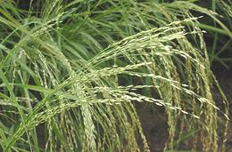

This grain is widely grown in Ethiopia and Eritrea, and is used to make the bread of the region, Injera. It is a variety of Lovegrass, related to Millet, but with very small grains, averaging about 0.020 inch wide (0.5 mm) and about 0.039 inches long (1 mm). It takes about 100 grains to equal the weight of 1 grain of wheat. Despite this small size, the grains are prolific enough to be worth harvesting. It is grown in both ivory and brown varieties, with farmers reporting most of their customers prefer the ivory. The brown is most common in North America, but the ivory is also grown.
Domesticated Teff has been harvested in Ethiopia for between 3000 and 6000 years, and is now a minor crop in India and Australia. It is increasingly grown in the western United States as a productive and very nutritious animal forage crop, alternating with alfalfa in the fields. This has made it more available for other uses as well. Ethiopia had a long standing ban on exporting Teff to keep it affordable, but improvement in agricultural practices allowed that ban to be lifted in 2015.
More on Other Grains.
 In Ethiopia and Eritrea this grain is used to make Injera, the bread of the region. It is also the main ingredient in Tella, the beer of the region, combined with Sorghum and Gesho (Shiny-Leaf Buckthorn) as an antimicrobial bitter. Photo by Rasbak distributed under license Creative Commons Attribution-Share Alike 3.0 Unported.